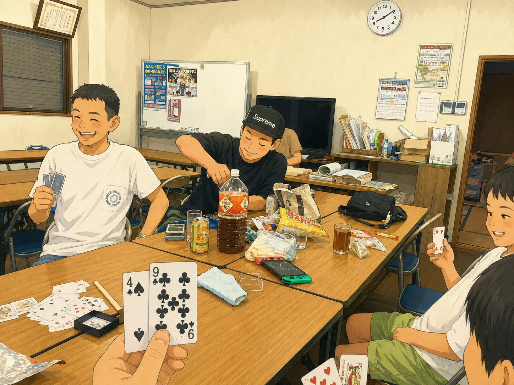

先日書いた「ふれあい交流会」第2回、無事に開催はできました。ただ結果としては、一般の参加者はゼロでした。
正直、開催前から嫌な予感はしていました。お盆と日程が重なったこと、告知の掲示板がなかなか貼られなかったこと。前回の記事に書いた通りです。それでも当日になれば誰かしら来てくれるんじゃないか、という淡い期待も少しはあったんですが、案の定という結果になりました。
締め切りが過ぎたあと、個別に声をかけてくれた方も何人かいました。「気になっている人がいるから誘ってみる」と動いてくれた方もいて、その気持ちはすごくありがたかったです。ただ、結局そこからも当日は誰も来てくれませんでした。
会自体は、いつものメンバーだけで開きました。トランプを持ち出したら、子どもも大人も関係なく本気になって、思いのほか盛り上がりました。少人数の分、ゆっくり話せたのは前回書いた通りの良さでしたが、今回の一番の目的だった「町会に入っていない方に来てもらう」というところは、まったく達成できなかったことになります。

いつものメンバーでトランプ。人数は少なくても盛り上がりました
ここで一度立ち止まって考えました。日程がお盆だったこと、掲示板が締め切りに間に合わなかったこと、それ以外にも見えていない原因があるのかもしれません。今の時点ではまだはっきりとはわかりません。
それでも、ここでやめるつもりはありません。次は10月ごろにもう一度開催しようと思っています。前回の記事で決めた「日程は最初からお盆・年末年始・大型連休を外す」「掲示板は早めに配って貼ってもらう時間を確保する」の2つは変わらず実行します。それに加えて、今回声をかけてくれた方たちの力も、もっと早い段階から借りられないか考えてみます。
一度でうまくいかなかったからといって、続けることをやめてしまったら、次に繋がる芽まで摘んでしまう気がします。ゼロという結果は正直こたえますが、続けることが一番大事だと思って、また次の準備を始めます。ほな、また。